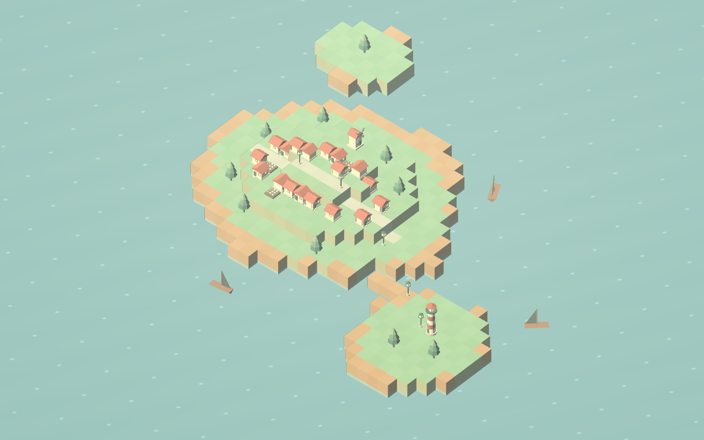
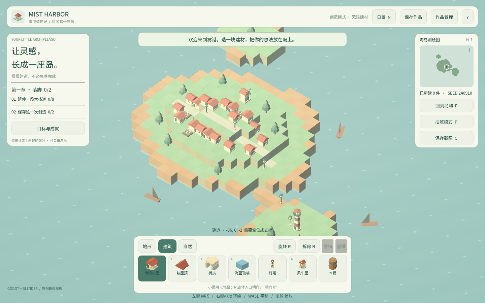

卷 4 · 第 24 章 截图与摄影模式：两帧等待与 Web 下载
本章目标：读懂"按 C 拍一张干净照片"背后藏着的三个坑——
为什么等两帧、Web 上怎么把文件交给浏览器、以及为什么P与C要分开。
对应任务：T31 / T32 | 对应文件：main.gd的_capture_photo()
24.1 一张干净照片的四步
func _capture_photo() -> void:
var was_visible := hud.visible
hud.visible = false # ① 藏 HUD
await RenderingServer.frame_post_draw # ② 等两帧
await RenderingServer.frame_post_draw
var image := get_viewport().get_texture().get_image()
hud.visible = was_visible # ③ 立刻恢复
... # ④ 保存 + 通知| 步骤 | 为什么 |
|---|---|
| --- | --- |
| ① 藏 HUD | 截图要的是纯游戏画面，不要面板和按钮 |
| ② 等两帧 | hud.visible = false 只是标记，要等渲染管线真的画完才生效 |
| ③ 立刻恢复 | 拿到 image 就恢复，用户几乎无感 |
| ④ 保存 | user://photos/ + 时间戳文件名 |
为什么是两帧不是一帧？
- 第一帧：提交隐藏 HUD 的绘制指令
- 第二帧：确保 GPU 缓冲里已经是"无 HUD"的画面
只等一帧，很可能截到还带着 HUD 的画面——这个 bug 极难发现，因为它偶发。
📌 同样的"等两帧"也出现在缩略图渲染里（第 13 章的
_render_one）。
凡是"改了场景立刻取画面"，都要等帧。
24.2 Web 上把文件交给浏览器
DirAccess.make_dir_recursive_absolute("user://photos")
var stamp := Time.get_datetime_string_from_system(true).replace(":", "-")
var file_name := "mist-harbor-%s.png" % [stamp]
if image.save_png("user://photos/" + file_name) != OK:
_toast("截图保存失败。"); return
photo_stats["photos"] += 1
if world.night:
photo_stats["night_photos"] += 1
if OS.has_feature("web"):
JavaScriptBridge.download_buffer(image.save_png_to_buffer(), file_name, "image/png")
_toast("照片已保存并开始下载。")
else:
_toast("照片已保存：%s" % [ProjectSettings.globalize_path("user://photos/" + file_name)], 5.0)| 平台 | 行为 |
|---|---|
| --- | --- |
| 桌面 | 直接写文件，toast 显示真实路径（用 globalize_path 把 user:// 转成系统路径） |
| Web | 写 IndexedDB 之外，还要用 JavaScriptBridge.download_buffer() 触发浏览器下载——否则玩家根本拿不到文件 |
注意 replace(":", "-")：时间戳里的冒号在 Windows 文件名里非法，必须替换。
这类"跨平台文件名卫生"问题很常见，值得记住。
24.3 P 与 C 为什么要分开
elif event.keycode == KEY_P: hud.visible = not hud.visible # 切换 HUD
elif event.keycode == KEY_C: _capture_photo() # 拍一张| 键 | 用途 |
|---|---|
| --- | --- |
| P | 手动切换 HUD 显隐——玩家自己构图、调整视角，慢慢找角度 |
| C | 自动完成"隐藏 → 截图 → 恢复"——一键拿到成品 |
分成两个键的价值：想慢慢构图的人用 P，想快的人按 C。
如果只有一个键，就会变成"要么拍到 HUD，要么看不见自己在干嘛"。
24.4 照片也是游戏数据
photo_stats["photos"] += 1
if world.night: photo_stats["night_photos"] += 1photo_stats 会流向两个地方：
- 章节目标
night_photo：夜色里拍一张（第 22 章） - 成就
night_owl夜观察者（第 23 章）
所以 _capture_photo() 最后调 _refresh_ui()——
刷新会触发 _check_achievements()，拍完照立刻可能解锁成就。
📌 这是一条完整闭环：玩法 → 数据 → 目标/成就 → UI 反馈。
🌩 在云端 agent（web-cb）里是什么样
| 🖥 本地路线 | 🌩 云端 agent（web-cb） | |
|---|---|---|
| --- | --- | --- |
| 截图 | 写本地文件 | 必须走 download_buffer，否则文件只在 IndexedDB 里拿不出来 |
| 等帧 | 本地 GPU | WebGL 同样需要等两帧，云端更明显（渲染管线更长） |
| 验收 | 看文件是否生成 | 云端断言 photos / night_photos 计数 + toast 文案 |
| 注意 | 路径分隔符、冒号 | 同；另外 Web 下载行为受浏览器策略影响（弹窗拦截） |
🌩 云端验收建议：别去检查文件（拿不到），断言
photo_stats的变化——
这正是第 11 章"断言语义不断言像素"的又一次应用。
24.5 常见坑速查（本章）
| 现象 | 原因 | 处理 |
|---|---|---|
| --- | --- | --- |
| 截图里还有 HUD | 只等了一帧 | 等两帧 frame_post_draw |
| Web 上点了没反应 | 没调 download_buffer | 加 JS 桥下载 |
| 文件名保存失败 | 时间戳含冒号 | replace(":", "-") |
| 夜景照片不算数 | 没判 world.night | 拍照时判断当前是否夜景 |
| 拍完成就没弹 | 没调 _refresh_ui() | 触发成就评估 |
| toast 显示 user:// 路径 | 没 globalize | 桌面端用 globalize_path |
24.6 本章作业
- 解释为什么要
await frame_post_draw两次，只等一次会怎样 - 说明 Web 与桌面在"把照片交给用户"这件事上的差异，指出关键 API
- 说出
P与C的分工，以及为什么不该合并成一个键 - 追踪一次"夜景拍照"的完整数据链路：按键 → 计数 → 目标/成就 → UI 反馈
🎓 教学提示（给教师 / 直播主）
- 概念锚点：渲染是异步的——改了场景，画面不会立刻变。
- 课堂演示：把第二次
await删掉，连拍十次，统计有几张带 HUD（现场翻车很有说服力）。 - 高频误解：学生以为
hud.visible = false之后下一行就能拿到干净画面。 - 讨论题：如果要做"连拍/延时摄影"，这段代码该怎么扩展？
- 批改要点：作业 1 要提到"第一帧提交指令、第二帧确保画完"。
🖼 本章图集


📹 录屏分镜（8 分钟）
| 时间 | 画面 | 解说词要点 |
|---|---|---|
| --- | --- | --- |
| 00:00–01:30 | 按 C 拍一张，看 toast 与文件 | "一键拿到干净画面。" |
| 01:30–03:00 | 四步代码（重点是两帧） | "改了场景，画面不会立刻变。" |
| 03:00–04:30 | Web 的 download_buffer vs 桌面 globalize_path | "Web 上要主动交给浏览器。" |
| 04:30–06:00 | P vs C 的分工演示 | |
| 06:00–08:00 | 照片 → 目标/成就闭环 + 作业 |
🎬 视频位（待录制）
把录好的视频放到course/media/video/24/（mp4 / webm / mov），重新执行 python tools/course_build.py 即会自动内嵌；首帧默认用本章第一张截图作为封面。分镜脚本见上一节。🖼 配图清单
| 文件名 | 内容 | 生成方式 |
|---|---|---|
| --- | --- | --- |
24-hud-visible.png | 正常带 HUD 的画面 | python tools/course_capture.py --chapter 24 |
24-hud-hidden.png | 按 P 隐藏 HUD 后的纯画面 | 同上 |
🎥 直播脚本（L3 片段，10 分钟）
- 开场："为什么我的截图里总有半截面板？"——引出等帧
- 演示：删掉第二次 await，连拍十张找 bug
- 互动：让观众设计一个"最佳角度"投票玩法（用截图功能）
- 收尾：卷 4 总结（规则 → 历史 → 存档 → 引导 → 成就 → 摄影）
❓ 本章 FAQ
Q：照片会进导出包吗？
A：不会，它在 user://photos/（玩家目录），属于用户数据。
Q：能拍多大分辨率？
A：等于当前视口分辨率；要更高需渲染到离屏 SubViewport（同缩略图做法，第 13 章）。
Q：photo_stats 会存档吗？
A：当前它是会话内的运行时统计（var photo_stats: Dictionary），
用于目标与成就的即时反馈；跨会话持久化可作为扩展练习。